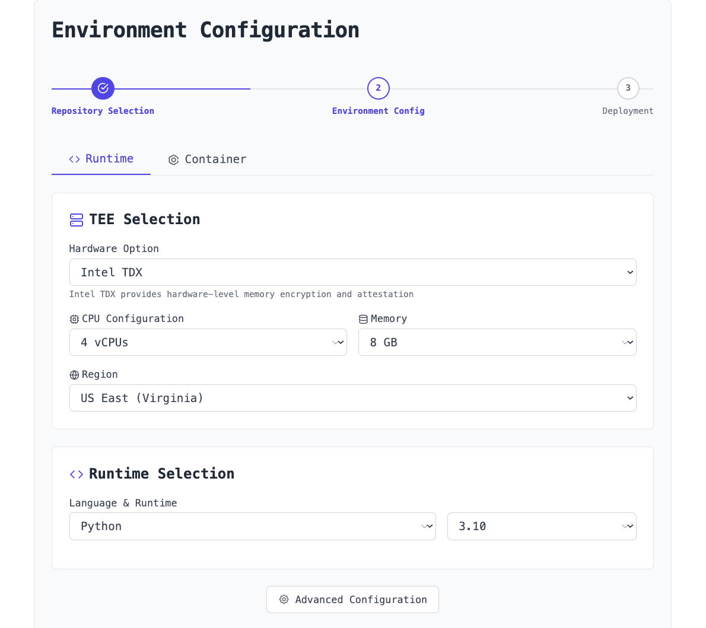
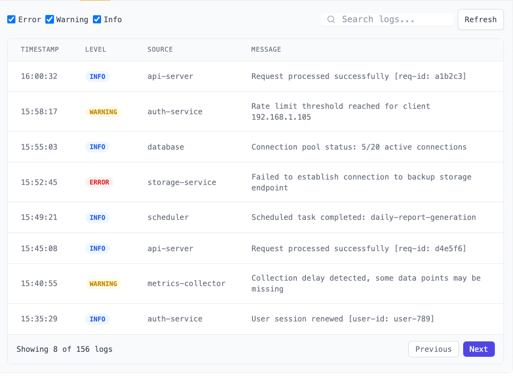

1. Getting Started
Our goal is to make it as simple as possible to deploy your code securely in a Trusted Execution Environment. Start by selecting your source repository through a simple interface. You can either connect your GitHub and select a repository or upload your local codebase directly.

After selecting your repository, configure your project with a name, environment type (Development, Staging, or Production), and select the branch you wish to deploy.
2. Project Configuration
Hardware Selection
Select your Trusted Execution Environment hardware option. We offer multiple memory and CPU configurations to match your application needs.
Deployment Configuration
Choose between two deployment approaches: runtime-specific or containerized via Docker. The runtime-specific approach is ideal for language-specific applications where you need fine-grained control over your environment and optimized performance. The containerized approach provides maximum portability and dependency isolation, perfect for complex applications with specific system requirements or legacy dependencies. Lunal automatically suggests the optimal configuration based on your repository contents. You can also explicitly define a runtime using a `lunal.config.yaml` file.
# Example runtime configuration in lunal.config.yaml runtime: language: python version: "3.10" framework: flask requirements: requirements.txt
3. Deployment Flow
One-Click Deploy
Once your environment is configured, deploying is as simple as clicking the "Deploy" button. Before deployment, you'll see a summary of your configuration and can toggle attestation levels.

Deployment Confirmation
After successful deployment, you'll receive your deployment URL, attestation verification status, and performance metrics showing your application's startup time and memory usage.
# Access your deployed application curl https://your-app-name.lunal.dev/health # Check attestation status lunal attestation status --app your-app-name
4. Build Process
Reproducible Builds
Lunal uses reproducible build pipelines to ensure that the same input code always produces the same output artifacts. This is crucial for verifying that your deployed code matches what you intended.

Hash Generation
During the build process, cryptographic hashes are generated for your code and dependencies. These hashes are used later in the verification process to ensure code integrity.
# Generate hash locally to verify against deployed version lunal build verify --path ./my-project --output hash.txt # Compare with deployed hash lunal verify --hash-file hash.txt --deployment your-app-name
5. Local Build Verification & Signing
Developer Signing Process
For additional security, you can sign your code using your personal or organizational cryptographic keys. This creates a verifiable link between you as the developer and the deployed code.

# Sign your code's hash with your private key lunal sign --hash-file hash.txt --key ~/.ssh/id_rsa # Upload the signature to Lunal lunal upload --signature hash.txt.sig --deployment your-app-name
Verification Chain
Lunal provides a complete end-to-end verification flow that connects your original source code, your developer signature, the platform build hash, and the running application.
6. Attestation Mechanics
What is Attestation?
Attestation is the cryptographic proof that your code is running exactly as intended, in a genuine TEE environment, without tampering or observation.

Verification API
Lunal provides a complete DCAP-based verification infrastructure that runs entirely within your environment for maximum security and control.
# Verify attestation via API
curl https://verify.lunal.com/v1/attestations/{deployment-id}/verify
# Or use our CLI
lunal attestation verify --deployment your-app-name
7. Logging & Performance Monitoring
Logs Dashboard
Monitor your application through our centralized logging system with search and filter capabilities for quick debugging.
Performance Metrics
Track your application's performance with real-time resource utilization graphs, response time metrics, and automatic anomaly detection.
# Stream logs from your deployment lunal logs --follow --deployment your-app-name # Get performance metrics lunal metrics --deployment your-app-name --last 30m